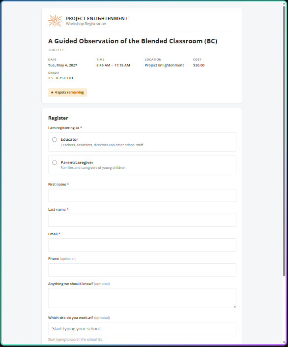
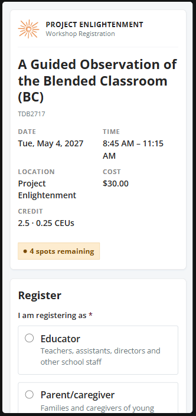
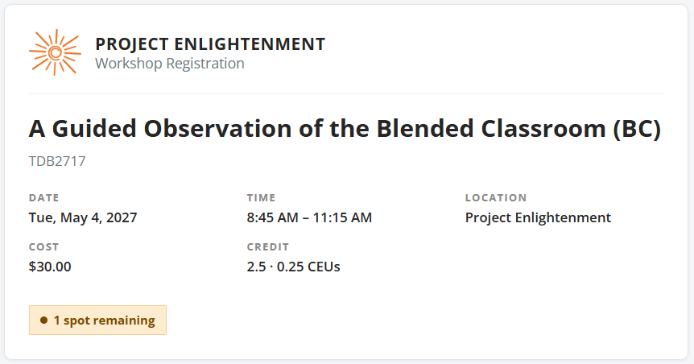
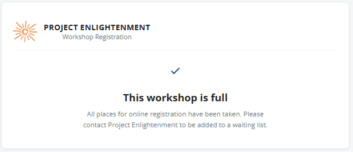
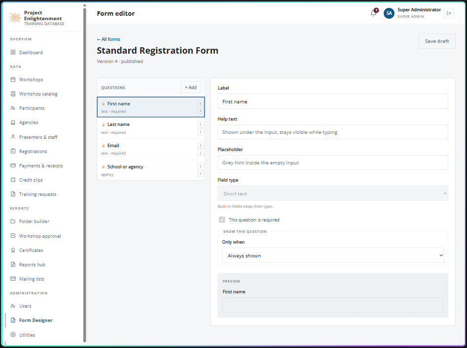
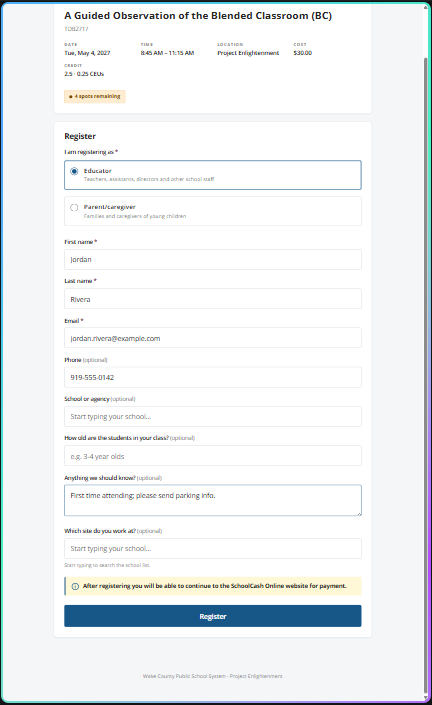
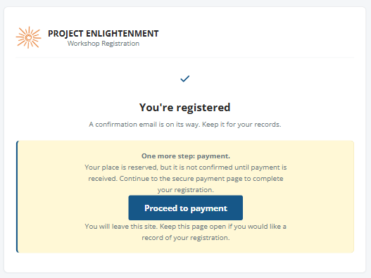
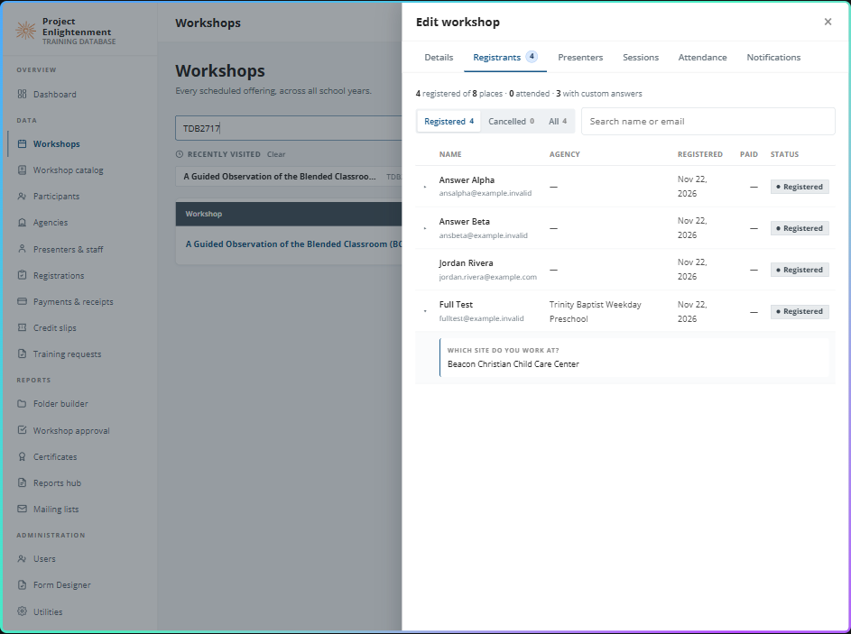
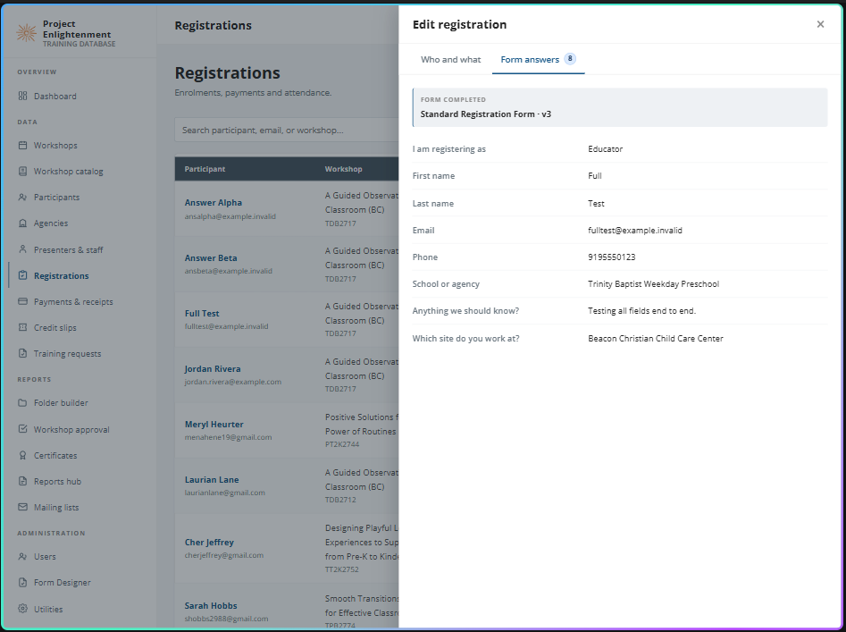

Project Enlightenment · Staff Guide
Online Registration:
What Families See
A walkthrough of the public registration form, from the moment a family opens the link to the moment they pay — and where their registration lands on your side.
Why this matters
Families are currently using a Microsoft Form to register for a workshop. That form is being replaced by the one described here, which they can complete themselves, at any hour, from a link you send them. This guide walks through exactly what a family sees from the moment they open the link to the moment they pay — so you know what to expect, what to tell them on the phone, and where to find their registration afterwards.
You do not need to configure anything to read this guide. It describes the finished form, after all the setup is done.
1Everything a family needs is at the top
The first thing a family sees is the workshop itself — not a login screen, not a menu. The title, date, time, location, cost and credit hours are all in one card, before they are asked for a single piece of information.

This matters for two reasons:
- Fewer phone calls. The three questions the office answers most often — when is it, where is it, how much is it — are answered before the family has to ask.
- No surprises. Cost and credit hours sit next to the date, so nobody registers expecting a free workshop and then meets a payment page.
The form works the same way on a phone, which is how most families will open the link. There is no sideways scrolling, and every field is large enough to tap comfortably.

2Spots remaining update live — and close on their own
Under the workshop details is a live count of the places left. Here the workshop is nearly full — one place to go:

The number is not a snapshot taken when the page was built. It is worked out each time the page loads, from the registrations actually on file. When one family registers, the next family to open the link sees one fewer place.
When the last place goes, registration closes by itself. Nobody has to watch the count or remember to switch the link off. A family who arrives after the workshop fills sees this instead of a form:

They are told to contact Project Enlightenment about a waiting list, so the enquiry still reaches you — it just does not become an over-booked workshop.
The same self-closing behaviour covers the two other cases:
| Situation | What the family sees |
|---|---|
| Every place taken | “This workshop is full” — with a waiting-list prompt |
| You closed registration | “Registration is closed” |
| The link has not opened yet | “Registration has not opened yet” |
You can also cap online registration below the room’s capacity, so the last few places stay available for people who call the office. The count respects that cap.
3The questions are yours to change
The questions on the form are not fixed. An administrator can add, remove, rename and reorder them in the Form Designer, and the public form follows immediately.

Every question has four parts you can set:
| Setting | What it does |
|---|---|
| Label | The question itself, e.g. “Which site do you work at?” |
| Help text | Guidance shown under the field, which stays visible while typing |
| Placeholder | A grey hint inside the empty field, e.g. “3-4 year olds” |
| Required | Whether the family must answer before they can submit |
Why help text is separate from the placeholder
In the old form, guidance was often written as a placeholder — which vanishes the moment someone starts typing, exactly when they need it. Help text sits below the field and stays put.
Questions can also be conditional. A question can be set to appear only when an earlier answer calls for it. In the form below, choosing Educator reveals two extra questions that a parent is never shown:

This keeps the form short for everyone. A family only answers what applies to them, and you only collect answers that mean something.
You can also offer a school or agency picker that searches the real school list, so a family picks from your list rather than typing a name by hand. That keeps your agency records clean without anyone retyping them.
4Payment is handed to SchoolCash Online
When a family submits the form, they are not asked for a card number on our site. They get a confirmation screen with one clear next step:

The wording is deliberate. “Your place is reserved, but it is not confirmed until payment is received.” A family who closes the browser at this point has a reserved place and an unpaid registration — which is exactly what shows up on your roster, so you can follow up.
Pressing Proceed to payment takes them straight to the SchoolCash Online page for that workshop. They leave our site and finish there. The note under the button tells them to keep the page open if they want a record, so nobody loses their confirmation by navigating away.
If a workshop is free, or you have not attached a payment page, the payment step is simply not shown and the confirmation screen stands on its own.
5You see every registration, with the answers
Registrations arrive in the app the moment they are submitted. Open the workshop and choose the Registrants tab.

At the top you get the summary in one line — 4 registered of 8 places, 0 attended, 3 with custom answers — followed by the roster: name, email, school, date registered, amount paid and status.
The Answers column is where the custom questions land. The arrow beside a name opens that person’s answers in place, so you can see what they told you without leaving the roster:
For the full picture, click a name to open the registration. The Form answers tab lists every field the family completed — the standard fields and the custom ones together, in the order they were asked — with the name and version of the form they filled in at the top:

That header matters when a form has been revised. It tells you which version that family actually saw, so an answer that no longer matches the current form still makes sense.
What staff need to remember
- The link is the invitation. Send the workshop’s registration link; the form, the details and the payment handoff are all behind it.
- You do not need to watch the count. Registration closes itself when the workshop fills.
- A reserved place is not a paid place. Check the roster for registrations that stopped at the payment step.
- Answers are on the roster and on the registration. Use the arrow for a quick look, the Form answers tab for the full record.
- Forms can change without losing history. Editing a form creates a new version; older registrations keep the answers they gave.
Questions this guide does not answer
If a family reports a problem the screens above do not explain — a link that will not open, a payment that did not go through, a name spelled wrong — treat it as a data question rather than a form question. Look the registration up first; the answer is usually on the record.